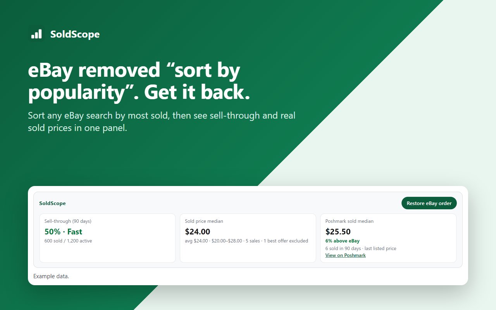
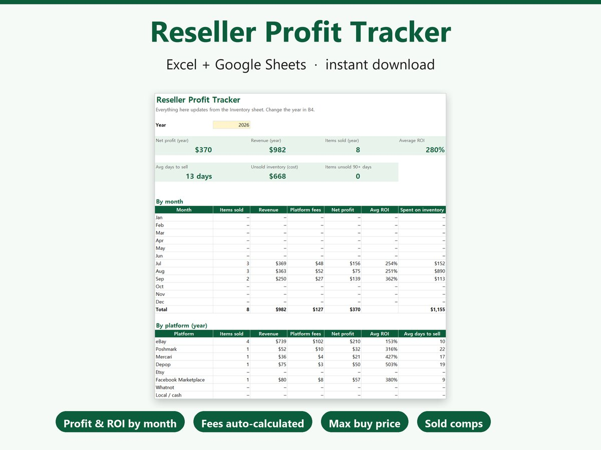

SoldScope
SoldScope
eBay removed “sort by popularity”. SoldScope brings it back.
A free Chrome extension for resellers. On every eBay search it sorts results by most sold and shows the sell-through rate and what things actually sold for.
Add to Chrome — free
What it does
Sort by most sold
Reorders the results on the page by their “sold” count, so proven sellers come first. One click restores eBay’s order.
Sell-through rate
Sold listings divided by active listings for the same search over eBay’s 90-day sold window, labeled Slow, Moderate, Fast or Very fast.
Sold price summary
Median, average, low and high of recent sold prices. Sales made through an accepted Best Offer are left out, because eBay shows only the original price for those.
Compare with Poshmark (optional, eBay.com)
Shows Poshmark’s 90-day sold median for the same keywords and whether it sells higher or lower there. Off until you turn it on.
Purchase history and sold comps on item pages
Under every eBay item title: one click to the listing’s purchase history, and one click to sold comps for that item, with filler words like “NEW!!” and “Free Shipping” stripped from the search.
SoldScope Pro
The features above are free and stay free. Pro is an optional license for power sellers and card collectors:
- Grades & 7-day trend: sold prices grouped by the grade in each listing title, with multi-card lots set aside, so graded and raw cards are never mixed in one average. Median per grade, last 7 days, and whether prices are rising or falling.
- Multi-page analysis: sold price stats across up to 720 sold listings, not just the first page.
- CSV export: download sold listings with grade, date and price for your own spreadsheet.
$4.99 per month or $39 per year. Cancel anytime; full refund within 14 days. Payments are handled by Lemon Squeezy.
Checkout opens in a few days, as soon as the SoldScope update that activates license keys is live in the Chrome Web Store.
Your license key arrives by email right after checkout. Paste it in SoldScope settings (right-click the SoldScope icon → Options). One key works on up to 3 browsers.
See the terms and refund policy.
Reseller Profit Tracker (spreadsheet)
SoldScope tells you what sells. The Reseller Profit Tracker tells you what you actually made. A ready-made spreadsheet for Excel and Google Sheets:
- Fees calculated for you on eBay, Poshmark, Mercari, Depop, Etsy, Facebook Marketplace and Whatnot. Edit any fee.
- Max buy price calculator for the thrift store: type the expected sale price and your profit goal.
- Dashboard with profit, ROI and days to sell by month and by platform.
- Comps tab that takes the CSV SoldScope Pro exports.

Get the spreadsheet on Etsy — $9.99Guides
- How to sort eBay search results by most sold
- How to calculate eBay sell-through rate
- How to find PSA 10 and graded card comps on eBay
Privacy
No account and no tracking. SoldScope has no server; everything runs in your browser. Read the privacy policy.
Support
Found a bug or have a request? Email soldscope.help@gmail.com. eBay changes its pages from time to time; if SoldScope stops showing numbers, tell us and we will fix it.